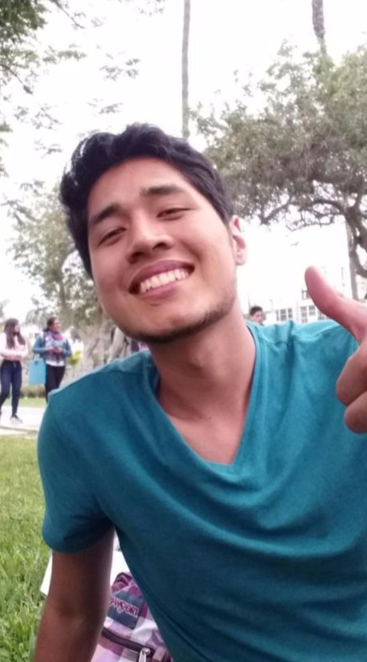

Nuestro equipo

Jhoana Rodriguez
Developer

Alvaro Sevilla
Soy una persona muy apasionada y dedicada a lo que hace, me gustan los deportes como el futbol, natación, taekwondo. Toco la guitarra y soy aficionado a la musica. En un futuro como ingeniero biomédico ayudaré a las personas a mejorar su calidad de vida, mi mayor sueño es poder desarrollar tecnología innovadora en el país, y así transformar la salud en el Perú
Daniela Ferrero
Developer